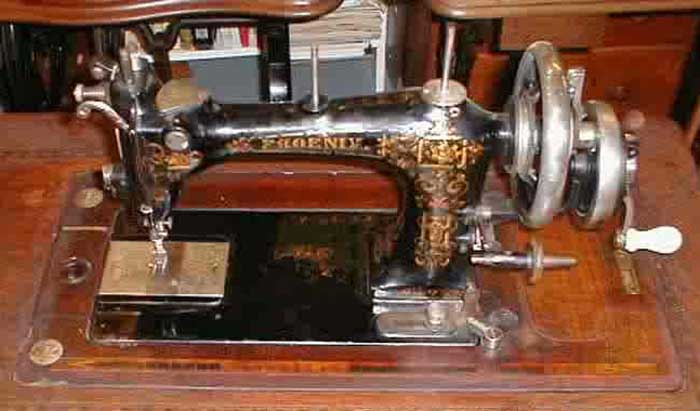

The NeedleBar
Baer & Rempel Class D
1888 - 1918
Medium-type Rotary Hook with bobbin holder, improved in 1898

Courtesy of Eleanor Beck
© Alan Quinn 2005. All Rights Reserved
This page may not be reproduced or distributed in part or in whole without the prior written permission of the copyright owner